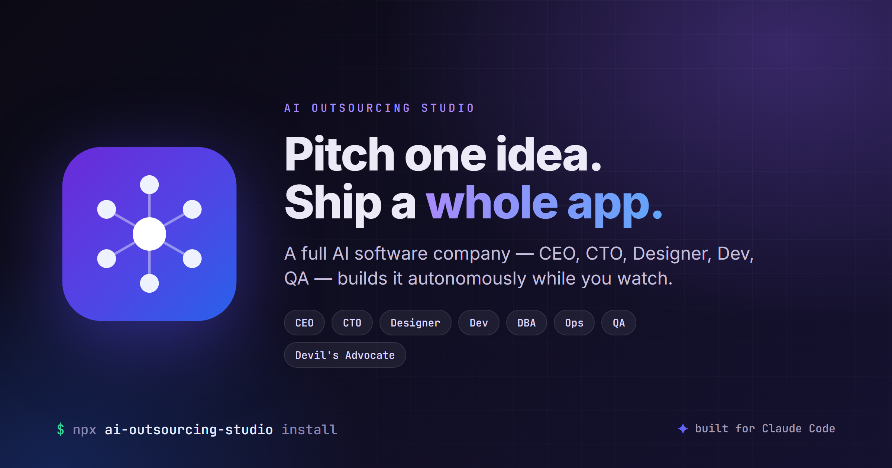

AI Outsourcing Studio installs a simulated software agency into Claude Code. Nine specialist AI roles — CEO, CTO, Designer, Dev, DBA, Ops, QA, and a Devil's Advocate — design, build, test, and ship a working web app autonomously while you watch.

You pitch the CEO once. The roles debate, hand off work among themselves, and you come back to a shipped project — no micromanaging.
Each role is a Claude subagent with its own system prompt, tools, and strict lane. No one asks upward for permission to do their own job.
Owns vision, scope, and win conditions. The only role that talks to you.
Turns the brief into testable user stories and acceptance criteria.
Owns the UI: design tokens, layout, screens, and copy.
Chooses the tech stack and system architecture; reviews every wave.
Designs the data model and writes the migrations.
Sets up CI, deploy, and the release runbook.
Implements the code in waves and commits it for review.
Owns test strategy and a bug loop that runs until zero defects.
Stress-tests every major decision before it is committed.
Prompting one agent to “build me an app” gives you code with no product thinking, no design contract, and no one playing skeptic.
You are a client, not a collaborator. The CEO asks at most three strategic questions — often zero — then the company runs silent until sign-off.
CTO owns the stack, Designer owns the UI, DBA owns the schema, QA owns tests. Every decision has an accountable owner.
Every defect becomes a tracked task with file:line refs. No wave ships with an open bug — QA re-verifies until zero.
A dedicated Devil's Advocate debates every artifact — SPEC, architecture, schema, each code wave — so plausible-but-wrong output doesn't survive.
Installs into your global ~/.claude/ and adds /aos:* commands to any Claude Code session. Your existing hooks and extensions are untouched.
Requires Claude Code and Node.js ≥ 18.
An open-source extension for Claude Code that installs a simulated software outsourcing company. Nine specialist AI roles collaborate autonomously to turn a one-line idea into a working web application.
Run npx ai-outsourcing-studio install. It installs into your global ~/.claude/ directory and adds /aos:* slash commands available in any Claude Code session.
Yes — free and MIT-licensed. The source is on GitHub and the package is published on npm.
Instead of one agent writing code, the work is split across nine accountable roles with strict lanes, plus a Devil's Advocate that stress-tests every major decision. You get product thinking, a design contract, a test plan, and adversarial review — not just a wall of code.
Yes. Run npx ai-outsourcing-studio install --codex to add OpenAI Codex CLI support — a managed block is merged into ~/.codex/AGENTS.md, the skills are installed in Codex's native format, and entry points work as /prompts:aos-idea. The studio also ships canonical AGENTS.md, GEMINI.md, and a Cursor rule for Gemini CLI, Cursor, and Antigravity. Codex runs the pipeline sequentially since it has no subagents.